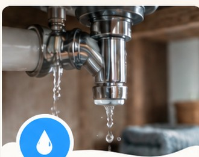
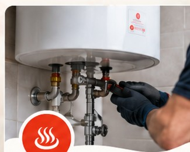
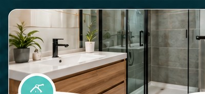
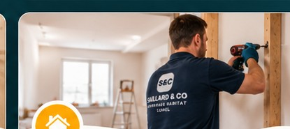
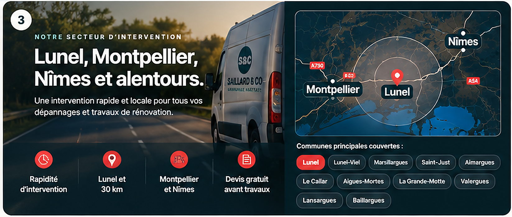

Dépannage à Lunel :une urgence, une solution.
Fuite d’eau, chauffe-eau en panne, WC qui coule, petit problème électrique ou dégât des eaux : un interlocuteur local pour diagnostiquer, dépanner et, si besoin, remettre en état.
✓ Intervention locale ✓ Devis avant travaux ✓ 7j/7 selon disponibilité
Vous voulez être rappelé ?
Indiquez votre numéro, votre commune et le problème rencontré. Préparez votre demande puis envoyez-la par e-mail.
Je préfère envoyer un e-mailDe l’urgence à la remise en état.
L’objectif est simple : résoudre la cause puis éviter de multiplier les artisans si le sinistre impose ensuite du placo, de l’enduit, de la peinture, un sol ou une salle de bain à reprendre.

Recherche de fuite
Fuite visible, humidité, alimentation ou raccord : l’objectif est d’identifier l’origine avant d’engager les réparations nécessaires.

Dépannage chauffe-eau
Un chauffe-eau qui fuit ou qui ne chauffe plus peut avoir plusieurs causes. Le diagnostic permet d’éviter un remplacement inutile lorsque la réparation est possible.
Réparation WC
Une chasse d’eau qui coule en permanence gaspille rapidement beaucoup d’eau. Une intervention ciblée permet souvent de remplacer uniquement la pièce défectueuse.
Dégâts des eaux
Après suppression de la cause, les supports abîmés peuvent nécessiter plusieurs corps de travaux. Le dépannage et la remise en état sont coordonnés avec un seul interlocuteur.

Salle de bain
De la réparation ponctuelle à la remise en état complète, les travaux sont étudiés selon le support existant, l’étanchéité et les équipements à conserver ou remplacer.

Rénovation intérieure
Pour les petites rénovations et remises en état : placo, peinture, parquet, cuisine et travaux complémentaires avec un seul interlocuteur.
Lunel au centre, Montpellier et Nîmes autour.

Lunel, les communes proches et Montpellier font partie de mon secteur habituel. Les interventions à Nîmes sont étudiées au cas par cas.
Un artisan à proximité, réactif et polyvalent.
Vous échangez directement avec l’artisan.
Une proposition claire avant les travaux concernés.
Priorité aux situations qui ne peuvent pas attendre.
Un seul interlocuteur quand plusieurs corps de travaux sont nécessaires.
Avant de demander une intervention.
Intervenez-vous en urgence ?
Oui, selon la nature du problème et les disponibilités du moment. Pour une urgence, appelez directement.
Intervenez-vous à Montpellier et Nîmes ?
Oui, j’interviens à Montpellier, comme à Lunel et dans les communes proches. Pour Nîmes, les demandes sont étudiées au cas par cas selon la nature de l’intervention et les disponibilités.
Faites-vous la remise en état après un dégât des eaux ?
Oui, après traitement de la cause : placo, plafond, enduit, peinture, revêtement de sol et autres travaux intérieurs peuvent être étudiés.
Le devis est-il réalisé avant les travaux ?
Le principe est de présenter le devis avant les travaux concernés, sauf action immédiate convenue pour sécuriser une situation.